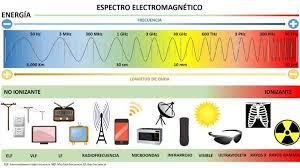
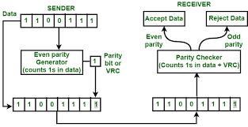
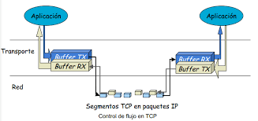
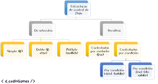

Proyecto Final: Sistema de Comunicación
2. Medios de Transmisión

Los medios de transmisión son los canales a través de los cuales se transporta la información desde el emisor hasta el receptor dentro de un sistema de comunicación. Estos medios determinan la velocidad, confiabilidad, alcance y seguridad del proceso de transmisión.
La correcta selección del medio de transmisión es fundamental para garantizar la integridad de los datos y minimizar pérdidas o interferencias durante la comunicación.
Además, el medio de transmisión influye directamente en el costo del sistema y en la facilidad de mantenimiento, ya que algunos medios requieren infraestructura especializada, mientras que otros permiten mayor flexibilidad de instalación.
2.1 Medios de Transmisión Guiados

Los medios guiados utilizan un soporte físico para conducir la señal de comunicación. Se caracterizan por ofrecer mayor seguridad, estabilidad y menor interferencia externa.
Son ampliamente utilizados en redes locales, enlaces de larga distancia y sistemas donde se requiere alta confiabilidad en la transmisión de información.
Este tipo de medios permite un mayor control del trayecto de la señal, facilitando la detección de fallas y reduciendo el riesgo de accesos no autorizados.
2.1.1 Par Trenzado, Coaxial y Fibra Óptica

Dentro de los medios guiados existen distintos tipos de cables, cada uno con características específicas que influyen en su rendimiento y aplicaciones.
La elección del tipo de cable depende de factores como la distancia, el ancho de banda requerido y el entorno donde será instalado.
- Par trenzado: Utiliza pares de conductores de cobre trenzados para reducir interferencias electromagnéticas. Es económico y común en redes LAN.
- Cable coaxial: Ofrece mayor protección contra el ruido gracias a su estructura con blindaje metálico.
- Fibra óptica: Emplea pulsos de luz para transmitir datos, permitiendo altas velocidades y largas distancias sin pérdida significativa.
2.2 Medios de Transmisión No Guiados

Los medios no guiados transmiten la información sin necesidad de un soporte físico, utilizando ondas electromagnéticas que se propagan por el aire o el espacio.
Estos medios permiten movilidad y cobertura amplia, aunque pueden verse afectados por interferencias ambientales.
Por esta razón, suelen emplearse técnicas de modulación y control de errores para mejorar la calidad y confiabilidad de la transmisión.
2.2.1 Radiofrecuencia, Microondas, Satélite e Infrarrojo
Cada uno de estos medios tiene aplicaciones específicas dependiendo del alcance, la velocidad y el entorno de comunicación.
- Radiofrecuencia: Utilizada en radio, televisión y redes inalámbricas.
- Microondas: Empleadas en enlaces punto a punto y telefonía móvil.
- Satélite: Permite comunicaciones a gran escala y cobertura global.
- Infrarrojo: Comunicación de corto alcance, común en controles remotos.
2.3 Métodos para la Detección y Corrección de Errores

Estos métodos permiten identificar y corregir errores que ocurren durante la transmisión de datos, asegurando la integridad de la información.
Son esenciales en redes de comunicación modernas, donde la pérdida de información puede afectar el rendimiento y la seguridad del sistema.
2.3.1 VRC, LRC y CRC
Estos métodos varían en complejidad y precisión, siendo seleccionados según el nivel de confiabilidad requerido.
- VRC: Usa un bit de paridad para detectar errores simples.
- LRC: Analiza bloques de datos completos.
- CRC: Método matemático altamente confiable para detección de errores.
2.4 Control de Flujo
El control de flujo regula la cantidad de datos enviados para evitar la saturación del receptor y garantizar una comunicación eficiente.
Este mecanismo es fundamental cuando los dispositivos emisor y receptor tienen diferentes capacidades de procesamiento.
2.4.1 Tipos de Control de Flujo
Existen distintos métodos de control de flujo que se aplican dependiendo del tipo de red y del protocolo utilizado.
- Asentimiento: Confirmación de recepción de datos.
- Ventanas deslizantes: Permite múltiples envíos sin esperar confirmación.
- Por hardware: Uso de señales físicas.
- Por software: Implementado mediante protocolos.
- Lazo abierto: Sin retroalimentación.
- Lazo cerrado: Con retroalimentación.